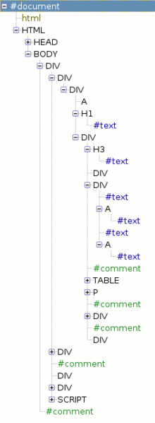
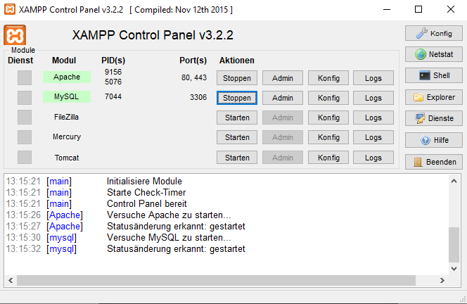
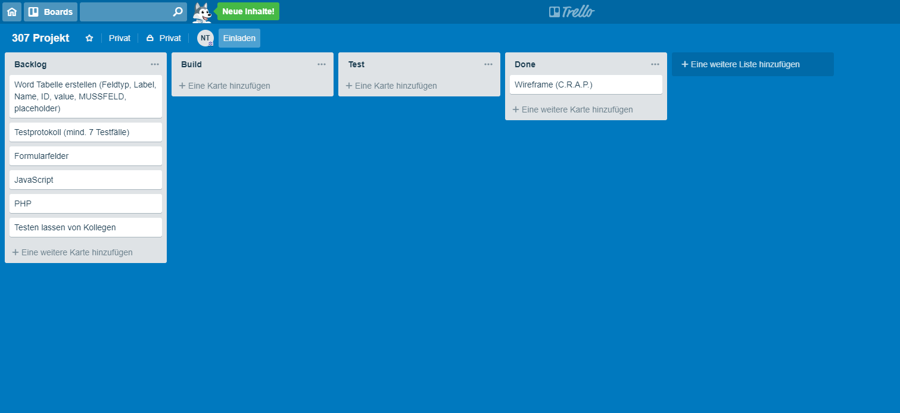

Web-Formulare
Web-Formulare sind eine Schwachstelle in vielen Webseiten. Worauf ist zu achten?
Weniger ist mehr
Verwenden Sie nur unbedingt notwendige Felder. Niemand füllt gerne umfangreiche Formulare aus. Zu grosse Formulare können einen Interessenten davon abhalten mit Ihnen in Kontakt zu treten. Verlangen Sie keine Daten, die Sie auch selber ermitteln können. So macht die Abfrage einer Telefaxnummer nur noch in sehr seltenen Fällen einen Sinn!
Pflichtfelder sichtbar machen
Zeigen Sie, welches Pflichtfelder sind. Pflichtfelder müssen unbedingt ausgefüllt werden. Als Standard hat sich das Sternchen * etabliert.
HTML-Möglichkeiten sinnvoll ausnutzen
Übersichtliche Formulare bestehen aus Eingabefeldern, Kontrollkästchen, Auswahlmenüs und Optionsschaltflächen. Vermeiden Sie, dass der Benutzer selber viel eintippen muss. HTML5 bietet viele Möglichkeiten, die man früher in Formularen vermisst hat.
Formulare für Mobile-Geräte
Stellen Sie bei den Feldern das richtige type-Attribut ein und verwenden Sie nicht für alle Felder den Eintrag TEXT. Wenn Sie HTML5 verwenden, stellen Sie sicher, dass die Feldattribute korrekt definiert sind, damit auf mobilen Geräten die relevante Tastatur auf dem Bildschirm angezeigt wird.
Geeignete Fehlermeldungen
Überprüfen Sie auch, ob das System geeignete und verständliche Fehlermeldungen bei Falscheingaben produziert.
GET vs. POST
Formulare können mit zwei verschiedenen Methoden gesendet werden: GET und POST
GET
Bei GET werden die Werte aus dem Formular an das Ende des URLs angehängt, der im Attribut action angegeben ist. Diese Methode eignet sich ideal für:
- Kurze Formulare
(z.B. Suchfelder) - Abrufen von Daten vom Webserver (ohne Daten zu senden, die zu einer Datenbank hinzugefügt oder daraus entfernt werden sollen)
POST
Bei der Methode POST werden die Werte in sogenannten HTTP-Headern gesendet. Verwenden Sie POST im Allgemeinen bei Formularen der folgenden Art:
- Formulare, in denen Benutzer Dateien hochladen können
- Lange Formulare
- Formulare mit sensiblen Daten
(z.B. Passwörtern) - Formulare, die Informationen zu einer Datenbank hinzufügen oder daraus entfernen
Wird die Methode nicht angegeben, so werden die Formulardaten mit GET gesendet.
Validierung
Wahrscheinlich haben Sie im Web schon Formulare gesehen, die den Benutzern Rückmeldung geben, falls sie falsch ausgefüllt werden. Dieser Vorgang wird als Formularvalidierung bezeichnet.
Diese Validierung wurde immer mit JavaScript durchgeführt (nächstes Kapitel). In HTML5 jedoch wurden Validierungsmöglichkeiten eingeführt, die die Arbeit dem Browser überlassen.
Durch die Validierung wird sichergestellt, dass die Benutzer Informationen in einer Form eingeben, die der Server verstehen kann. Die Validierung der Inhalte vor dem Absenden Formulars bietet verschiedene Vorteile:
- Der Server muss weniger Arbeit verrichten.
- Die Benutzer können Probleme schneller erkennen, wenn die Validierung noch im Browser stattfindet und nicht erst auf dem Server.
Ein Beispiel für die Formularvalidierung durch HTML5 bildet das Attribut required, mit dem Sie jedes Steuerelement kennzeichnen können, dass die Benutzer unbedingt ausfüllen müssen. Dieses HTML5-Attribut muss keinen Wert haben. Da es in HTML4 aber keine Attribute ohne Wert gab, versehen einige Web-Autoren dieses Attribut mit dem Wert required.
Formular-Elemente
Eine komplette Liste aller Formular-Elemente von HTML5 finden Sie in folgendem Link:
Sicherheit
Die Sicherheit ist heutzutage ein recht kritisches Thema, denn es werden sehr viele sensible Daten versendet, welche nicht richtig verschlüsselt werden, die einfach zu hacken sind. Deshalb sollten Sie alle Daten mit der POST-Methode übermitteln, diese ist zwar auch nicht 100% sicher aber immer noch viel besser als die GET-Methode. Wenn Sie eine Suchfunktion auf ihrer Seite eingebaut haben, dann können Sie dies schon mit einer GET-Methode lösen, sobald aber Kundendaten an oder von einem Server gesendet werden, sollten diese mit der POST-Methode behandelt werden, besser wäre noch, wenn diese Daten verschlüsselt werden. Angaben wie Kontonummer, Kartenpins, Kreditkarten-Daten oder andere sehr sensible Daten sollten Sie aber auch nicht mit POST versenden, denn diese sind auch für diese Zwecke nicht sicher genug. Die Felder sollten auch richtig validiert werden, nicht, dass ein Hacker einen Code eingibt und dann stürzt die Datenbank ab, Kundendaten werden zurückgeschickt und so weiter. Wenn Daten aus einer Datenbank ausgelesen werden, welche diese Person nichts angehen, nennt man das "SQL-Injection". Das geht unter das Thema hacken und ist strafbar. Damit dies aber nicht geschieht, können Sie die Felder richtig validieren und kein SQL-Code kommt hindurch. Das ist auch deshalb wichtig, da eine Person so auch PHP-Code an den Server senden kann und das System übernehmen könne. Deshalb geht die Sicherheit immer vor.
JavaScript
JavaScript ist eine Programmiersprache mit der sich komplexe Programme in eine Webseite realisieren lassen. Immer wenn eine Webseite mehr macht als nur statische Informationen anzuzeigen, (z.B:
- Zeitliche Inhalt-Updates (Liveticker)
- interaktive Karten (Google Maps)
- animierte 2D/3D Grafiken (Spiele)
- etc.)
kannst du dir sicher sein das JavaScript benutzt wurde. Es ist die Dritte der Drei Standard-Technologien im Web, nach HTML und CSS.

- HTML ist die Markup-Language, die wir benutzen, um eine Webseite zu strukturieren und unsere Inhalte darzustellen, zum Beispiel durch Paragraphen, Überschriften, Tabellen aber auch um Bilder und Videos in die Webseite einzubinden.
- CSS ist die Sprache, um Stil-Regeln für HTML zu definieren, zum Beispiel, indem wir die Hintergrundfarbe und die Schriftart ändern.
- JavaScript ist eine Programmiersprache, die es erlaubt dynamische Updates der Inhalte, animierte Bilder und noch sehr viel mehr zu realisieren.
Die drei Teile bauen gut auf einander auf. Hier mal ein einfaches Beispiel: Wir können zunächst HTML benutzten, um eine Struktur zu bauen.
<p>Player 1: Chris</p>
Player 1: Chris
Anschliessend können wir mit einigen CSS-Regeln denn Satz schön aussehen lassen:
p {
font-family: 'Roboto Mono', monospace;
text-transform: uppercase;
background-color: yellow
}
Player 1: Chris
Und nun wollen wir, dass der Text auf den Input des Benutzers reagiert.
var para = document.getElementsByTagName('p');
para.addEventListener('click', updateName);
functionupdateName() {
var
name = prompt('Enter
a new name');
para.textContent
= 'Player 1 ' + name;
}
Klick auf mich!
Wozu ist das nützlich?
Der Kern von JavaScript ähnelt dem anderer Programmiersprachen. In JavaScript kannst du:
- Nützliche Werte in Variablen speichern. Wie im Beispiel, als wir eine Variable verwendet haben, um den eingegebenen Namen zu speichern.
- Operationen auf Texten ( in der Programmierung "Strings" genannt). Im oberen Beispiel hatten wir den String "Player 1:" und die Variable name verbunden und (wenn name "Chris" ist) haben wir den Text "Player 1: Chris" bekommen.
- Mit Code auf Events in einer Webseite reagieren. Wir haben ein click Event benutzt um darauf zu reagieren, wenn man auf das Label drückt.
JavaScript mit HTML-Dateien verknüpfen
Wenn Sie auf einer Webseite JavaScript verwenden wollen, müssen Sie dem Browser mithilfe des HTML-Elements <script> mitteilen, dass der Code in einem Skript steht. Das Attribut src dieses Elements gibt an, wo die JavaScript-Datei gespeichert ist.
Skripts auf der Seite Platzieren
Hin und wieder werden Sie JavaScript-Code auch auf der HTML-Seite zwischen <script>- und </script>-Tags sehen. (Es ist allerdings besser, ihn in einer eigenen Datei unterzubringen.) Grundsätzlich muss der <script>-Tag kurz vor dem End-Tag des Bodys stehen.
<script src="script.js"></script>
</body>
Begriffe
Variablen
Mit Variablen können Werte sowie Strings zwischengespeichert werden. Dies ist eine sehr nützliche Funktion. Eine Variable kann Definiert werden, dann kann ihr später einen Wert zugewiesen werden. Diese Schritte können aber auch zusammen gemacht werden. Im Beispiel wird zuerst die Variable definiert, dann wird ihr ein Wert gegeben. Die zweite Variable ist alles in einem Schritt, bei der dritten Variable werden die ersten beiden zusammengezählt und bei der vierten wird ein String eingespeichert, ein String ist eine Abfolge von Zeichen. Variablennamen dürfen nicht mit einer Zahl beginnen.
var eins;
eins
= 1;
var zwei = 2;
var drei = eins + zwei;
var text = "Ich bin ein String";
Arrays
Ein Array ist eine Liste aus mehreren Werten. Arrays werden wie Variablen definiert, nur, dass alle Werte durch Komma getrennt in [ ] Klammern geschrieben werden. Sollen diese Arrays ausgegeben werden, kann dies gleich wie bei einer Variable gemacht werden. Muss eine bestimmte Stelle eines Arrays ausgeben, so kann die Stelle in [ ] Klammern gesetzt werden. Hier muss beachtet werden, dass die Nummerierung mit 0 beginnt.
var array1 = [1, 2, 3, 4, 5];
var array2 = ["Hallo", "Welt"];
Objekte
Ein Objekt fasst mehrere Variablen, Arrays und Funktionen zu einem Modell zusammen. In Objekten werden neue Schreibweisen für Variablen verwendet. Am besten lässt sich das mit einem Beispiel zeigen, lassen Sie sich aber nicht verwirren wegen der Funktion am Schluss, Funktionen werden unter Funktionen angesprochen. Das Beispiel wird auf ein Hotel angewendet:
var hotel = {
name: "Quay",
rooms: 40,
booked: 25,
gym: true,
roomTypes: ["einzel", "doppel", "suite"]
};
Die erste Stelle ist der Name, die zweite Stelle ist der Wert. Array können auch in Objekte gespeichert werden. Sie können Objekte auch ausgeben. Objekte können auch bearbeitet werden, wie eine Variable mit hotel.name oder mit hotel['name'].
Funktionen
Mit Funktionen kann Code ausgelagert werden, welcher viele Male verwendet wird. Funktionen werden mit function fname(Parameter) {Inhalt der Funktion}. Der Inhalt ist der Code, welcher beim Verwenden der Funktion ausgeführt werden soll. In die Klammern können Parameter eingesetzt werden, mit welchen man in der Funktion arbeiten kann. Ich persönlich finde, dass in folgendem Link sehr gut erklärt wird, wie und wo man Funktionen einsetzt:
Schleifen
Schleifen sind ein einfaches Werkzeug, um einzelne Schritte wiederholt auszuführen. In folgendem Link wird erklärt wie Schleifen eingesetzt werden und welche Arten von Schleifen es gibt:
Bedingungen
Mit Bedingungen sind die if-Befehle gemeint. In folgendem Link werden diese erläutert:
Formulare mit JavaScript validieren
JavaScript prüft Formulare, um dem Benutzer und dem Programmierer das lästige Hin- und Her zwischen der Anwendung auf dem Server und dem Browser zu ersparen.
- Sind alle erforderlichen Felder ausgefüllt?
- Haben wir eine valide Emailadresse?
- Liegt ein Datum vor?
- Ist die Eingabe in diesem Feld eine Zahl?
In folgendem Link wird erklärt, wie man eine Validierung durch JavaScript erreicht:
SelfHTML Clientseitige Validierung
jQuery
jQuery ist eine frei verfügbare JavaScript-Bibliothek die Funktionen zur DOM-Navigation und -Manipulation zur Verfügung stellt.
DOM steht für "Document Object Model" und ist eine Art Baumstruktur eines HTML-Dokuments. Dabei steht jeder Knoten ein Objekt dar, welches einen Teil des Dokumentes repräsentiert, z. B. einen Absatz, eine Überschrift, ein Video oder etwa eine Tabellenzelle.
jQuery ist kurzgesagt eine Vereinfachung von JavaScript. Damit kann der lange und komplizierte Code von JavaScript sehr schnell gekürzt werden. Hier ein Beispiel:
JavaScript
var divs = document.querySelectorAll("div");
jQuery
var divs = $("div");
Diese Beispiele ergeben beide das gleiche Ergebnis. Sie speichern beide den Inhalt aller Divs in einer Variable namens "divs".
jQuery benutzt also genau wie CSS Selektoren. Das macht es einfacher als bei JavaScript, bei dem immer eine komplizierte Funktion benutzt werden muss. jQuery ist die meistverwendete JavaScript-Bibliothek. Jede zweite Website und rund 75% der 10'000 meistbesuchten Webseiten nutzen jQuery.
Um jQuery benutzen zu können, muss es wie JavaScript eingebunden werden, jedoch als absolute URL. Es gibt im Internet verschiedene jQuery-Anbieter. Am besten gibt man "jQuery CDN" in der Suchleiste ein und klickt auf den ersten Link. Dort wird erklärt, wie man jQuery ins HTML einbindet.
<head>
<script src="http://code.jquery.com/jquery-3.3.1.min.js"></script>
</head>
Wie ich oben im Beispiel gezeigt habe, sollte jQuery immer im Head eingebunden werden.
Ereignisse
Ereignisse brauchen Sie dann, wenn ein Besucher mit Ihrer Seite interagieren kann. Also wenn er zum Beispiel auf einen Knopf drückt, soll ihm eine Meldung angezeigt werden, dass er auf den Knopf gedrückt hat. In jQuery lassen sich diese sogenannten Events mit der ".on" Methode aufrufen z.B. $("h1").on("click", function(){});. An der Stelle von "click" können zahlreiche Eventtypen stehen die wichtigsten von ihnen sind blur, hover, focus und click. In folgendem Link sehen Sie eine Liste mit allen jQuery-Events:
Jetzt zeige ich Ihnen noch, wie Sie einen Knopf erstellen können, der beim Klick ein Div verschwinden lässt:
$("#event").on("click", function() {
$("#verschwinden").toggle();
})PHP
PHP ist eine serverseitige Scriptsprache, das heißt, damit man PHP Programme bzw. die PHP-Scripts ausführen kann, benötigt man einen Webserver, z.B. XAMPP. Um die Seite im Browser anzuschauen, muss im Webserver der Apache- und MySQL-Dienst aktiviert werden.
PHP wird hauptsächlich bei der Erstellung dynamischer Webseiten oder Webanwendungen eingesetzt. Mit ihrer Hilfe können einzelne Funktionen in HTML-Code eingebettet werden. Wie sieht das genau aus? Hier ein einfaches Beispiel für ein Skript in der Programmiersprache PHP:
<?php
echo "<h1>Hallo</h1>"
?>
PHP-Codes werden serverseitig ausgeführt. Das bedeutet, dass aus dem PHP-Code auf dem Server HTML-Ausgaben generiert und an den Client gesendet werden. Alles, was an den Server gerichtet ist, muss zwischen <?php und ?>stehen. Benutzer können nur das Ergebnis sehen, nicht den von Ihnen ursprünglich programmierten Code. Unser Beispielskript würde auf einem Webserver wie folgt aussehen:
Hallo
Serverseitige Validierung
Die Serverseitige Validierung ist eines der wichtigsten Themen, um seine Webseite / Server zu schützen. So können zum SQL-Injections verhindert werden mit nur einer Zeile PHP-Code, welche so aussieht:
$formularfeldName = mysqli_real_escape_string($_REQUEST['formularfeldName']); Diese Funktion schliesst alle Strings aus, welche wie SQL-Befehle aussehen.
Um die Seite vor Cross Site Scripting (XSS) zu schützen, lautet der Befehl wie folgt:
$formularfeldName = htmlspecialchars($_REQUEST['formularfeldName']);
jQuery VS. PHP
| Thema | jQuery | PHP |
|---|---|---|
| Variablen | var name = 'wert'; | $name = 'wert'; |
| Variablen ausgegeben | document.write(name); | echo $name |
| Arrays | var name = ['wert', 'wert']; | $name = array('wert', 'wert'); |
| Else if Abfragen | else if (Bedingung) | elseif (Bedingung) |
Projekt-Management
Die beiden Projekt-Management-Methoden SCRUM und Kanban sind die zwei Hauptmethoden in der Programmierung. Bei beiden Methoden werden alle Tätigkeiten für das Projekt auf Kärtchen geschrieben.
SCRUM
- Scrum Teams arbeiten in Sprint-Serien, die normalerweise ca. 2 Wochen dauern.
- Jeder Sprint startet mit einem Meeting, bei dem alle Tätigkeiten für das Projekt festgelegt werden.
- Jeden Tag gibt es noch ein Meeting, um den aktuellen Stand zu besprechen. Diese dauern sehr kurz.
- Zum Schluss gibt es noch ein Meeting um das Projekt revuepassierenzulassen.
Kanban
- Kanban ist ein kontinuierlicher Prozess.
- Tätigkeiten werden direkt vom Product Backlog "gepullt".
- Jede Spalte hat eine strikte maximale Bearbeitungszeit.
- Ab und zu werden neue Funktionen den Interessengruppen vorgestellt.
- Auch hier gibt es zum Schluss gibt es noch ein Meeting um das Projekt revuepassierenzulassen.
Testprotokoll
Wenn die Webseite fertiggestellt ist, sollte man Sie mit möglichst vielen Browsern und Geräten auf alle Funktionen testen. Zum Glück gibt es HERMES, von dem man jegliche Vorlagen herunterladen kann, auch für ein Testprotokoll:
Glossar
| Begriff | Beschreibung |
|---|---|
| DOM | Document Object Model |
| Syntax | Regel für die Struktur eines Programmcodes |
| XSS | Cross Site Scripting |
| jQuery | JavaScript-Bibliothek |
| Loop | Schleife |
| Validierung | Überprüfung der Eingegebenen Werte in einem Formular |